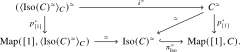
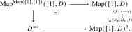
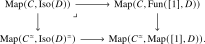
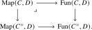
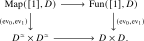
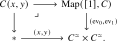
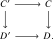
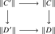

The localization of a category \(C\) at all its morphisms deserves special notation and terminology:
Definition 3.4.1 (Geometric realization). In the case where \(W := \Map([1],C)\) consists of all morphisms in \(C\), we write \[ \geom{C} \quad :=\quad C[W^{-1}], \] and we denote the localization functor by \(\lambda_C \colon C \to \geom{C}\). We refer to \(\geom{C}\) as the geometric realization of \(C\).
In other words, the geometric realization is characterized by the property that for every category \(D\), the functor \[ \lambda_C^*\colon \Fun(\geom{C},D) \to \Fun^{\Map([1],C)}(C,D) \] is an equivalence.
By Construction 3.3.9, the assignment \(C \mapsto \geom{C}\) is functorial in \(C\): every functor \(f\colon C \to D\) induces a functor \[ \geom{f}\colon \geom{C} \to \geom{D}. \]
Lemma 3.4.2. Assume that \(X\) is a groupoid. Then the localization functor \(\lambda_X\colon X \to \geom{X}\) is an equivalence.
Proof
Using that \(\Iso(X) \simeq \Fun([1],X)\), we obtain by Proposition 3.3.4 equivalences \[ \Fun^{\Map([1],X)}(X,D) \simeq \Fun^{\Iso(X)^{\simeq}}(X,D) \simeq \Fun(X,D), \] which shows that the identity map \(X \to X\) exhibits \(X\) as a localization of \(X\) at all its morphisms. This gives the claim.
Lemma 3.4.3. If \(C\) is a category and \(\Gamma\) is a groupoid, then precomposition with the localization functor \(\lambda_C\colon C \to \geom{C}\) defines an equivalence \[ \lambda_C^*\colon \Fun(\geom{C}, \Gamma) \iso \Fun(C,\Gamma) \]
Proof
We may simply compose the equivalence \(\Fun(\geom{C},\Gamma) \iso \Fun^{\Map([1],C)}(C,\Gamma)\) with the equivalence \(\Fun^{\Map([1],C)}(C,\Gamma) \iso \Fun(C,\Gamma)\) from Lemma 3.3.3.
Since we have obtained \(\geom{C}\) from \(C\) by inverting all its morphisms, one may expect it to be a groupoid. While this is indeed the case, this question is somewhat more subtle than it may seem at first, since a priori the localization may create new morphisms that do not lift to \(C\) itself. This problem is closely related to a variety of other statements we may expect to hold. Let us first formulate these and prove that they are equivalent; we will see afterwards that they are in fact satisfied.
Proposition 3.4.4. The following conditions are equivalent:
(1) For every category \(C\), the category \(\geom{C}\) is a groupoid;
(2) The geometric realization \(\geom{[1]}\) of the walking morphism \([1]\) is contractible;
(3) For every category \(C\), the functor \(p_{[1]}^* \colon C \to \Fun([1],C)\) is a full subcategory of \(\Fun([1],C)\) (in the sense of Definition 3.2.2);
(4) For every category \(C\), the functor \(\pi_{\Iso}\colon \Iso(C) \to \Fun([1],C)\) is a full subcategory;
(5) Every category \(C\) for which the map \(C^{\simeq} \simeq \Map(*,C) \xrightarrow{p_{[1]}^*} \Map([1],C)\) is an equivalence is a groupoid;
(6) For every category \(C\), the subcategory \(\lra{\Iso(C)^{\simeq}}_C \subseteq C\) spanned by all the isomorphisms in \(C\) is a groupoid;
(7) For every category \(C\), the inclusion \(C^{\simeq} \hookrightarrow C\) induces an equivalence \(C^{\simeq} \iso \lra{\Iso(C)^{\simeq}}_C\) between the groupoid core of \(C\) and the subcategory of \(C\) spanned by all its isomorphisms.
Proof
We start by showing that (1) implies (2). By (1), the category \(\geom{[1]}\) is a groupoid, so it suffices by Proposition 1.4.11 to show that for every groupoid \(\Gamma\) the induced map \[ \Map(*,\Gamma) \to \Map(\geom{[1]},\Gamma) \] is an equivalence. By Lemma 3.4.3, this map corresponds under the canonical equivalences to the map \[ p_{[1]}^*\colon \Gamma \to \Map([1],\Gamma). \] But this map is an equivalence since \(\Gamma\) is a groupoid, finishing the proof.
For (2) \(\implies\) (3), the equivalence \(\geom{[1]}\iso *\) and the universal property of geometric realization show that precomposition with \(p_{[1]}\colon[1]\to *\) induces an equivalence \[ C \iso \Fun^{\Map([1],[1])}([1],C), \] where the right-hand side is a full subcategory of \(\Fun([1],C)\) by construction. Thus \(p_{[1]}^*\) exhibits \(C\) as that full subcategory.
The Rezk equivalence \(C\iso\Iso(C)\) identifies \(p_{[1]}^*\) with the composite \(C\to\Iso(C)\xrightarrow{\pi_{\Iso}}\Fun([1],C)\). Hence (3) and (4) are equivalent.
For (3) \(\implies\) (5), recall that \(C\) is a groupoid if and only if the map \(C \to \Fun([1],C)\) is an equivalence. Since this functor is a full subcategory by (3), it follows from Lemma 3.2.12 that we may check this on objects, giving the criterion from (5).
We will now deduce (6) from (5). To show \(\lra{\Iso(C)^{\simeq}}_C\) is a groupoid, it suffices by (5) to show that the map \((\lra{\Iso(C)^{\simeq}}_C)^{\simeq} \to \Map([1],\lra{\Iso(C)^{\simeq}}_C)\) is an equivalence. To this end, consider the following commutative diagram, where the two horizontal maps are induced by the inclusion \(i\colon \lra{\Iso(C)^{\simeq}}_C \hookrightarrow C\):

Assume (6). The functor \(C^{\simeq} \to \lra{\Iso(C)^{\simeq}}_C\) constructed above is then a functor between groupoids. Its map on groupoid cores is inverse to the equivalence \(i^{\simeq}\) constructed in the preceding paragraph. Since the groupoid-core inclusions of its source and target are equivalences by Axiom G and Proposition 1.4.15, the functor itself is an equivalence by 2-out-of-3. This proves (7).
Finally, we show that (7) implies (1). The localization functor \(\lambda_C\colon C \to \geom{C}\) sends all morphisms of \(C\) to isomorphisms, hence it factors through the subcategory of \(\geom{C}\) spanned by its isomorphisms. By (7) this subcategory is equivalent to the groupoid core of \(\geom{C}\). The resulting functor \(C \to \geom{C}^{\simeq}\) still inverts all morphisms in \(C\), hence induces a functor \(\geom{C} \to \geom{C}^{\simeq}\). By uniqueness of the localization factorization, the composite \(\geom{C} \to \geom{C}^{\simeq} \hookrightarrow \geom{C}\) is identified with the identity. Thus the embedding \(\geom{C}^{\simeq} \hookrightarrow \geom{C}\) admits a section and is an equivalence by Lemma 1.6.24. It follows that \(\geom{C}\) is a groupoid.
Proposition 3.4.5. All of the equivalent conditions from Proposition 3.4.4 are satisfied.
Proof
It will suffice to show that the map \(\geom{[1]} \to *\) is an equivalence. By Proposition 1.4.11, it will suffice to show that for any category \(D\), the induced functor \(D^{\simeq} \simeq \Map(*,D) \to \Map(\geom{[1]},D) \simeq \Map^{\Map([1],[1])}([1],D)\) is an equivalence. Recall from Remark 2.1.29 that the groupoid \(\Map([1],[1])\) is a disjoint union of three points, corresponding to the identity on \(0\), the identity on \(1\), and the canonical map from \(0\) to \(1\) in \([1]\). Spelling out the definition of \(\Map^{\Map([1],[1])}([1],D)\), we obtain a pullback square

Proposition 3.4.6 (Objectwise criterion for natural isomorphisms). Let \(f,g\colon C\to D\) be functors and let \(\alpha\colon f\to g\) be a natural transformation. Then \(\alpha\) is a natural isomorphism if and only if \(\alpha_x\colon f(x)\to g(x)\) is an isomorphism for every object \(x\) of \(C\).
Proof
By Propositions 3.4.4 and 3.4.5,
the functor \(\Iso(D)\to\Fun([1],D)\) is a full subcategory. Unwinding, this means
we have a pullback square

Corollary 3.4.7. For categories \(C\) and \(D\), the following square is a pullback square:

Proof
By part (7) of Proposition 3.4.4, the two horizontal functors are the subcategories on the isomorphisms. The statement is thus equivalent to the statement that a natural transformation \(\alpha\colon f \to g\) is a natural isomorphism if and only if its restriction to \(C^{\simeq}\) is, which is the content of Proposition 3.4.6.
Lemma 3.4.8. For every category \(D\), the following square is a pullback:

Proof
This is Corollary 3.4.7 applied to \(C = [1]\).
Corollary 3.4.9. For objects \(x,y\) of a category \(C\), there is a pullback square

Proof
This follows from Lemma 3.4.8 and the pasting law for pullback squares.
Lemma 3.4.10. Consider a pushout square of categories
 
Proof
By Definition 1.8.1, it will suffice to show that the square becomes a pullback square after applying \(\Map(-,E)\) for every category \(E\). By Corollary 1.4.13 and Lemma 3.4.3, there are equivalences \[ \Map(\geom{C},E) \simeq \Map(\geom{C},E^{\simeq}) \simeq \Map(C,E^{\simeq}), \] and similarly for \(C\) replaced with \(C'\), \(D\) and \(D'\). The claim now follows from the assumption on the original square.